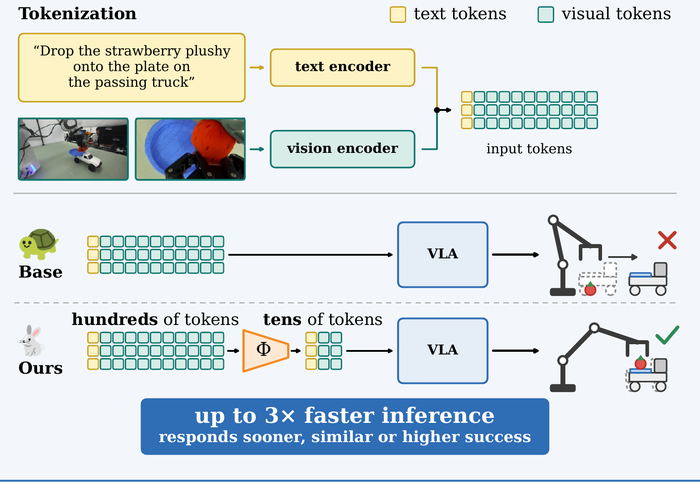
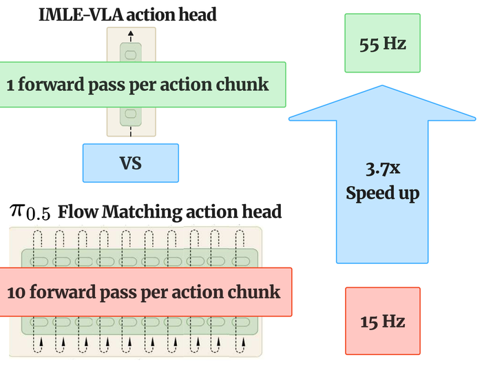

Publications

Under review, 2027
Across OpenVLA-OFT and a π0.5-based VLA, PAIR shortens the visual-token sequence by more than 14×, accelerates inference by 2.4–2.8× with no success drop, and cuts adaptation wall-clock time roughly in half.

IROS 2026
A single-step conditional generator trained with conditional IMLE replaces the iterative flow-matching action head of π0.5: 3.67x higher inference frequency (55 Hz vs. 15 Hz), up to 11x higher action throughput, the highest average success rate on LIBERO (98.0%), and 2.2x to 3.0x lower jerk on a real Franka Emika Panda.
Experience
- ML Engineer Intern, RBC Borealis AI · fall 2024 · real-time credit-adjudication model pipelines and monitoring
- ML Engineer (contract), Mosaic · 2023 – 2024 · Canada's first chatbot for newcomers, 600k+ users
- Software Engineer Intern, NetApp · 2022 – 2023 · StorageGRID S3 API backend and Angular front-end
- Software Engineer (contract), BGC Engineering · 2022 · equipment-management app for 700+ engineers
Education
Simon Fraser University
PhD in Computer Science, supervised by Prof. Ke Li and Prof. Roei Herzig · 2025 – present
Simon Fraser University
Bachelor of Computer Science, AI concentration · CGPA 3.77, Dean's Honour Roll · 2020 – 2025